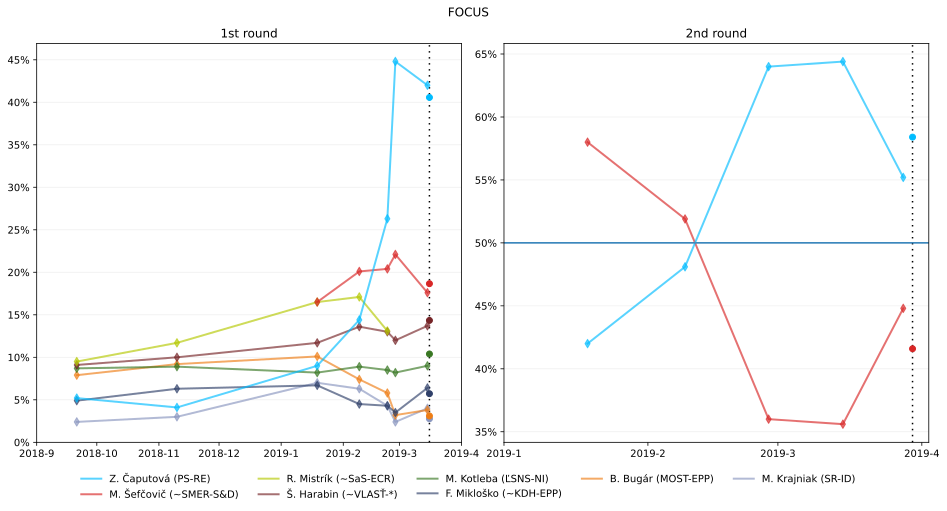
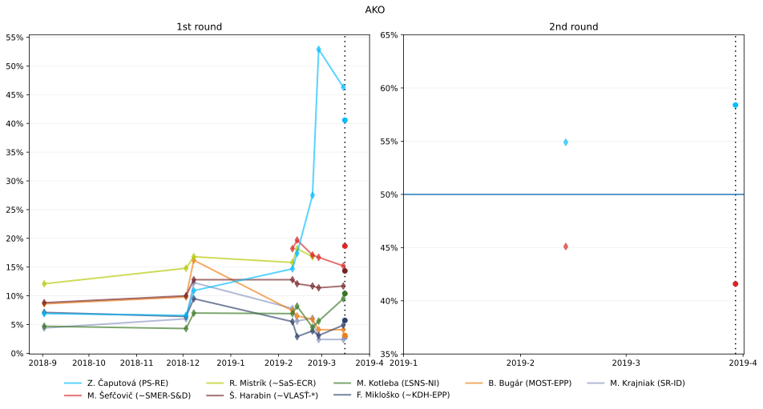
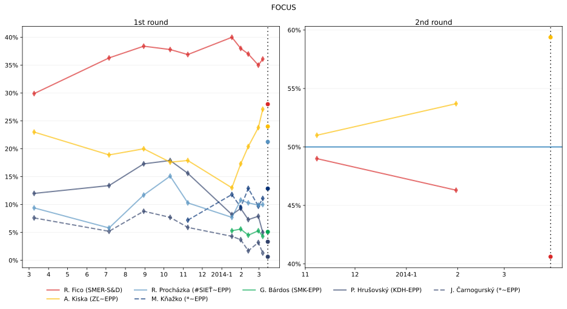
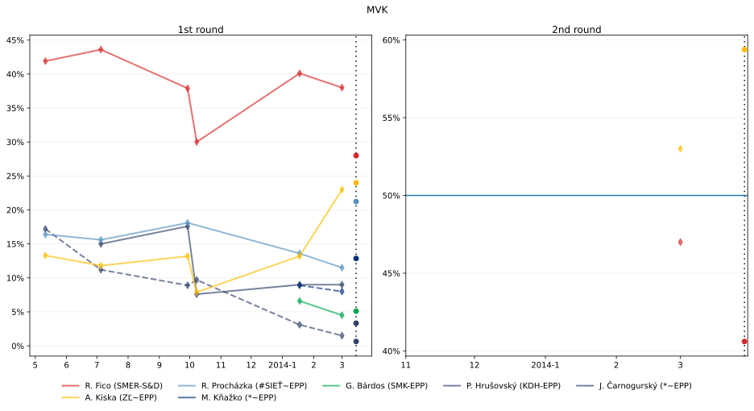

Presidential trends
The polls are too irregular and sparse to do a general poll of polls model. For this reason, I have created separate visualisations for different pollsters. The dotted lines represent the presidential elections.
2019 presidential trends


2014 presidential trends

